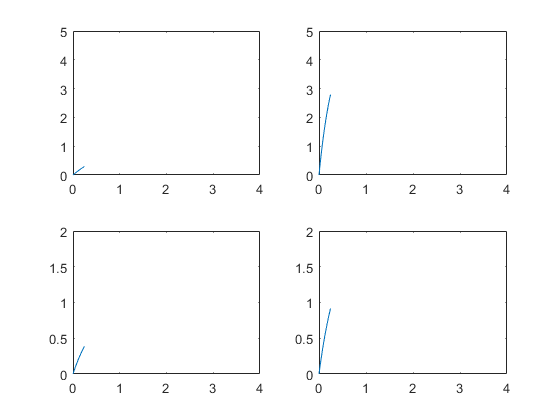
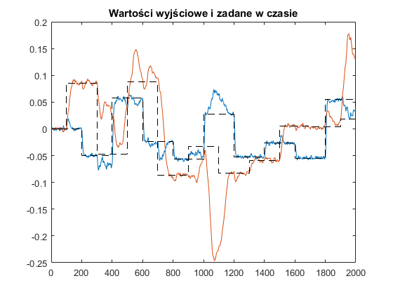
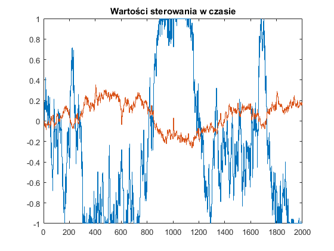

Contents
- Algorytm DMC 2x2 (benchmark)
- Obiekt regulacji
- Ogólne parametry algorytmu
- Macierze wyznaczane offline
- Macierze dla wersji minimalistycznej algorytmu
- Wyznaczanie parametrów Ku, Ky
- Generacja macierzy
- Symulacja
- wyznaczenie du (półoptymalnie)
- wyznaczenie du (optymalnie)
- Rysownie przebiegów trajektorii wyjścia, zadanej oraz sterowania
- Funkcje do wyznaczania minimalnej postaci algorytmu GPC
Algorytm DMC 2x2 (benchmark)
clear all global N a b na nb nu ny close all obiekt_losowy = 0; ny = 2; nu = 2;
Obiekt regulacji
if(obiekt_losowy == 0) inercje = 2; pobj = [.7, .3; .5, .4]; ppobj = cell(2,2); for m=1:2 for n=1:2 ppobj{m,n} = [pobj(m,n) 1]; for i=2:inercje ppobj{m,n} = conv([0.00000001 1], ppobj{m,n}); %(pobj(m,n)*s+1)^n end end end % input 1 input 2 Gs = [tf( 1,ppobj{1,1}), tf( 5,ppobj{1,2}); % output 1 tf( 1,ppobj{2,1}), tf( 2,ppobj{2,2})]; % output 2 Tp = 0.005; Gz = c2d(Gs,Tp,'zoh'); % Y1/U1=G(1,1) and Y1/U2=G(1,2) => Y1 = G(1,1)*U1 + G(1,2)*U2 for m=1:2 tmpa = conv(Gz.Denominator{m,1},Gz.Denominator{m,2}); a(m,:) = tmpa(2:end); tmpb = conv(Gz.Numerator{m,1},Gz.Denominator{m,2}); b(m,1,:) = tmpb; tmpb = conv(Gz.Numerator{m,2},Gz.Denominator{m,1}); b(m,2,:) = tmpb; end na = size(a,2); nb = size(b,3); else na = 10; nb = 30; for m=1:ny a(m,:) = rand(1,na); for n=1:nu if(m==n) b(m,n,:) = rand(1,1,nb); else b(m,n,:) = rand(1,1,nb)*0.1; end end end end % Ograniczenia umax = 1; umin = -1;
Ogólne parametry algorytmu
Horyzonty predykcji i sterowania
N = 50; Nu = 50; % Początkowa i końcowa chwila symulacji kp = max(na,nb)+1+1; kk = 2000; dk = 200; % Wartości trajektorii zadanej yzad = zeros(ny,kk); % yzad(1,200:end) = .1; % yzad(2,500:end) = .2; for k=dk:dk:kk for m=1:ny yzad(m,(k-(m-1)*dk/ny):end) = (rand()*2-1)*0.1; end end % Macierze Lambda oraz Psi -- wagi funkcji kosztów Lambda = eye(Nu*nu)*1.0; Psi = eye(N *ny)*1.0; % Wektory wartości sterowania oraz wyjścia obiektu regulacji u = zeros(nu,kk); y = zeros(ny,kk);
Macierze wyznaczane offline
Odpowiedź skokowa
S = zeros(ny,nu,N); for k = 1:size(S,3) for m=1:ny for n=1:nu for i=1:min(k,nb) S(m,n,k) = S(m,n,k) + b(m,n,i)*1; end for i=1:min(k-1,na) S(m,n,k) = S(m,n,k) - a(m,i)*S(m,n,k-i); end end end end % Macierz M M = cell(N,Nu); for row = 1:N for col = 1:Nu if(row-col+1 >= 1) M{row,col} = S(:,:,row-col+1); else M{row,col} = zeros(size(S(:,:,1))); end end end M=cell2mat(M); % Macierz K K = (M'*Psi*M+Lambda)^(-1)*M';
Macierze dla wersji minimalistycznej algorytmu
Kyzad = zeros(nu,ny); Ku = zeros(nu,nu,nb); % r,n,j -> nu x nu x nb Ky = zeros(nu,ny,na+1); % r,m,j -> nu x ny x (na+1) % r -- numer sygnału sterującego, którego przyrost jest wyliczany % n -- numer sygnału sterującego % m -- numer sygnału wyjściowego % j -- dynamika sygnału wejściowego/wyjściowego % Kolejność nie jest przypadkowa! fun_f(1,1,1); % inicjalizacja parametrów f fun_g(1,1,1,1); % inicjalizacja parametrów g fun_e(1,1,1,1); % inicjalizacja parametrów e
Wyznaczanie parametrów Ku, Ky
for r=1:nu for n=1:nu for j=1:nb for p=1:N for m=1:ny s=(p-1)*ny+m; Ku(r,n,j) = Ku(r,n,j) - K(r,s)*fun_e(p,j,m,n); end end end end end for r=1:nu for m=1:ny for j=0:na for p=1:N s=(p-1)*ny+m; Ky(r,m,j+1) = Ky(r,m,j+1) - K(r,s)*fun_f(p,j,m); end end end end for r=1:nu for m=1:ny for p=1:N s=(p-1)*ny+m; Kyzad(r,m) = Kyzad(r,m) + K(r,s); end end end
Generacja macierzy
gpc2x2_matlab_to_C
#define na 4
#define nb 5
#define nu 2
#define ny 2
const float b[ny][nu][nb] = {{{+0.000000e+00,+7.117393e-03,-6.999739e-03,-1.394960e-08,-1.548716e-24},{+0.000000e+00,+8.264257e-02,-8.205420e-02,-1.627453e-07,+0.000000e+00}},{{+0.000000e+00,+9.950146e-03,-9.826524e-03,-1.955503e-08,+2.171044e-24},{+0.000000e+00,+2.484435e-02,-2.459709e-02,-4.888756e-08,-5.427610e-24}}};
const float a[ny][na] = {{-1.976354e+00,+9.764717e-01,+1.084101e-16,+0.000000e+00},{-1.977628e+00,+9.777512e-01,+2.465190e-32,-1.205171e-32}};
float Kyzad[nu][ny] = {{-1.993046e-01,+9.102806e-01},{+8.050209e-01,+1.497493e-01}};
float Ky[nu][ny][na+1] = {{{+4.950616e+01,-9.410558e+01,+4.479872e+01,+4.973657e-15,+0.000000e+00},{-1.637016e+02,+3.098456e+02,-1.470543e+02,-3.860617e-30,+1.812585e-30}},{{-2.584925e+01,+4.502884e+01,-1.998461e+01,-2.218737e-15,+0.000000e+00},{+1.176425e+01,-2.356530e+01,+1.165130e+01,+2.937508e-31,-1.436133e-31}}};
float Ku[nu][nu][nb] = {{{-1.132918e-01,+1.270073e+00,-1.156779e+00,-2.301105e-06,+3.975785e-22},{-3.380229e-02,-3.127681e-02,+6.507898e-02,+1.137373e-07,-8.163155e-22}},{{-3.377919e-02,+5.993982e-02,-2.616058e-02,-5.246848e-08,-5.756732e-23},{-3.940225e-01,+1.780248e+00,-1.386223e+00,-2.748203e-06,+6.467769e-23}}};
Symulacja
dudiff = zeros(nu,kk);
for k = kp:kk
% symulacja obiektu regulacji for m=1:ny for n=1:nu for i=1:nb if(k-i>=1) y(m,k) = y(m,k) + b(m,n,i)*u(n,k-i); end end end for i=1:na if(k-i>=1) y(m,k) = y(m,k) - a(m,i)*y(m,k-i); end end end % wprowadzanie zakłóceń for m=1:ny; y(m,k) = y(m,k) + (rand()-.5)/500; end % wyznaczanie wyjścia modelu ym = zeros(ny,1); for m=1:ny for n=1:nu for i=1:nb if(k-i>=1) ym(m) = ym(m) + b(m,n,i)*u(n,k-i); end end end for i=1:na if(k-i>=1) ym(m) = ym(m) - a(m,i)*y(m,k-i); end end end % wyznaczanie d d = y(:,k)-ym; % wyznaczanie Y0 Y0=zeros(ny,N); for m=1:ny for p=1:N Y0(m,p) = d(m); for n=1:nu for i=1:nb if(-i+p<=-1) Y0(m,p) = Y0(m,p) + b(m,n,i)*u(n,k-i+p); else Y0(m,p) = Y0(m,p) + b(m,n,i)*u(n,k-1); end end end for i=1:na if(-i+p<=0) Y0(m,p) = Y0(m,p) - a(m,i)*y(m,k-i+p); else Y0(m,p) = Y0(m,p) - a(m,i)*Y0(m,-i+p); end end end end Y0 = reshape(Y0,[],1); % wyznaczanie Yzad (stałe na horyzoncie predykcji) Yzad = repmat(eye(ny),N,1)*yzad(:,k);
wyznaczenie du (półoptymalnie)
du_po = K(1:nu,:)*(Yzad-Y0);
wyznaczenie du (optymalnie)
du = zeros(nu,1);
for r=1:nu
for m=1:ny
du(r) = du(r) + Kyzad(r,m)*yzad(m,k);
end
for n=1:nu
for j=1:nb
du(r) = du(r) + Ku(r,n,j)*u(n,k-j);
end
end
for m=1:ny
for j=0:na
du(r) = du(r) + Ky(r,m,j+1)*y(m,k-j);
end
end
end
du_diff(1:nu,k) = du-du_po;
u(:,k) = u(:,k-1)+du;
for n=1:nu
if(u(n,k)>umax); u(n,k) = umax; end
if(u(n,k)<umin); u(n,k) = umin; end
end
end
Rysownie przebiegów trajektorii wyjścia, zadanej oraz sterowania
figure; for m=1:ny for n=1:nu subplot(ny,nu,((m-1)*nu+n)); plot(Tp*((1:size(S,3))-1),squeeze(S(m,n,:))); xlim([0,4]); if(m==1) ylim([0,5]); else ylim([0,2]); end end end figure; plot(y'); hold on; stairs(yzad','k--'); hold off; title('Wartości wyjściowe i zadane w czasie'); figure; stairs(u'); title('Wartości sterowania w czasie'); % figure; % stairs(du_diff'); % title('Wartości błędu w czasie');  
Funkcje do wyznaczania minimalnej postaci algorytmu GPC
function out = fun_e(p,j,m,n) % wartości N, a, b, na, nb, nu, ny muszą już być w workspace'ie global N a b na nb nu ny E o = 0; if(isempty(E)) E=cell(ny,nu,N,nb+o); for m=1:ny; for n=1:nu; for p=1:N; for j=(1-o):nb; fun_e(p,j,m,n); end; end; end; end end if(~isempty(E{m,n,p,j+o})) out = E{m,n,p,j+o}; else if(j==1 && nb==1) out = 0; elseif(j==1 && nb>1) out = fun_g(p,j,m,n); elseif(j>=2 && j<=(nb-1) && j<nb && nb>1) out = fun_g(p,j,m,n) - fun_g(p,j-1,m,n); elseif(j==nb && nb>1) out = -fun_g(p,j-1,m,n); else disp(N);disp(a);disp(b);disp(na);disp(nb);disp(nu);disp(ny); disp(p);disp(j);disp(m);disp(n); %disp(E);disp(o); error('Error!'); end E{m,n,p,j+o} = out; end end function out = fun_f(p,j,m) % wartości N, a, b, na, nb, nu, ny muszą już być w workspace'ie global N a b na nb nu ny F o = 1; if(isempty(F)) F=cell(ny,N,na+o); for m=1:ny; for p=1:N; for j=(1-o):na; fun_f(p,j,m); end; end; end end if(~isempty(F{m,p,j+o})) out = F{m,p,j+o}; else if(p == 1) if(j==0) out = 1 - a(m,1); elseif(j>=1 && j<=(na-1)) out = a(m,j)-a(m,j+1); elseif(j==na) out = a(m,j); else disp(N);disp(a);disp(b);disp(na);disp(nb);disp(nu);disp(ny);disp(F);disp(o);error('Error!'); end elseif(p>=2 && p<=N) if(j>=0 && j<=(na-1)) out = fun_f(p-1,0,m)*fun_f(1,j,m)+fun_f(p-1,j+1,m); elseif(j==na) out = fun_f(p-1,0,m)*fun_f(1,j,m); else disp(N);disp(a);disp(b);disp(na);disp(nb);disp(nu);disp(ny);disp(F);disp(o);error('Error!'); end else disp(N);disp(a);disp(b);disp(na);disp(nb);disp(nu);disp(ny);disp(F);disp(o);error('Error!'); end F{m,p,j+o} = out; end end function out = fun_g(p,j,m,n) % wartości N, a, b, na, nb, nu, ny muszą już być w workspace'ie global N a b na nb nu ny G o = N; if(isempty(G)) G=cell(ny,nu,N,nb-1+o); for m=1:ny; for n=1:nu; for p=1:N; for j=(1-p):(nb-1); fun_g(p,j,m,n); end; end; end; end end if(~isempty(G{m,n,p,j+o})) out = G{m,n,p,j+o}; else if(p == 1) if(j>=0 && j<=(nb-1)) out = b(m,n,j+1); else disp(N);disp(a);disp(b);disp(na);disp(nb);disp(nu);disp(ny);disp(G);disp(o);error('Error!'); end elseif(p>=2 && p<=N) if(j>=(1-p) && j<=(-1)) out = fun_g(p-1,j+1,m,n); elseif(j>=0 && j<=(nb-2)) out = fun_f(p-1,0,m)*fun_g(1,j,m,n)+fun_g(p-1,j+1,m,n); elseif(j==(nb-1)) out = fun_f(p-1,0,m)*fun_g(1,j,m,n); else disp(N);disp(a);disp(b);disp(na);disp(nb);disp(nu);disp(ny);disp(G);disp(o);error('Error!'); end else disp(N);disp(a);disp(b);disp(na);disp(nb);disp(nu);disp(ny);disp(G);disp(o);error('Error!'); end G{m,n,p,j+o} = out; end end